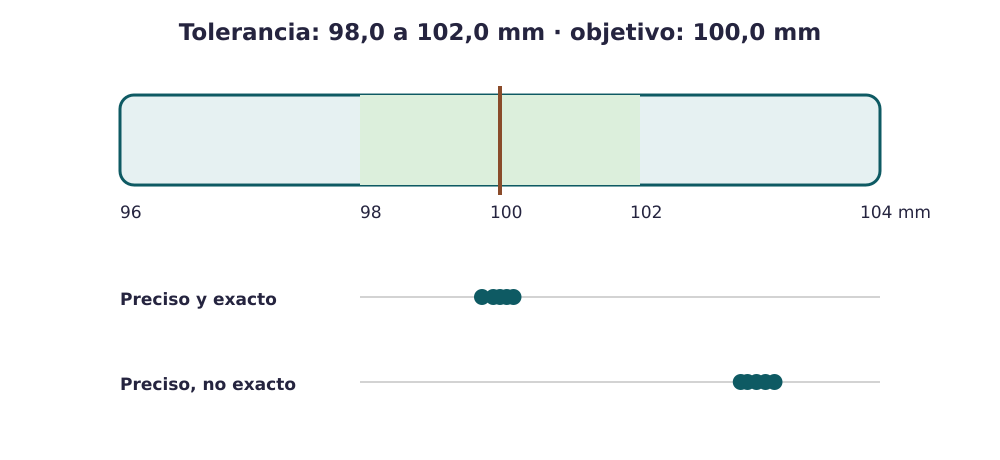

Contenido
Medir para decidir
Una medida industrial no termina en un número. Debe indicar qué se midió, con qué método, qué instrumento se utilizó, qué incertidumbre o limitación existe y qué decisión permite tomar. Medir una característica que no afecta a la función no mejora el producto.

Conceptos esenciales
- Exactitud
- Proximidad entre el valor medido y el valor de referencia.
- Precisión
- Proximidad entre medidas repetidas en condiciones definidas.
- Resolución
- Menor cambio que puede mostrar el instrumento.
- Tolerancia
- Intervalo de valores que el diseño acepta para una característica.
- Calibración
- Comparación con referencias para establecer la relación entre indicación y valor, con sus incertidumbres. No significa ajustar automáticamente.
- Verificación
- Comprobación de que se cumplen requisitos especificados para el uso previsto.
- Trazabilidad metrológica
- Cadena documentada de calibraciones que relaciona un resultado con una referencia.
Elegir instrumento y método
La resolución debe ser suficiente frente a la tolerancia, pero no tiene sentido exigir una precisión extrema si la función no la necesita. También importan el rango, el contacto con la pieza, la temperatura, la fuerza aplicada y la repetibilidad del procedimiento.
| Característica | Método posible | Decisión |
|---|---|---|
| Diámetro de una boca | Calibre, varias orientaciones | Dentro/fuera de tolerancia; posible deformación |
| Masa del producto | Balanza verificada | Falta/exceso de material o componente |
| Estanqueidad | Presión o inversión durante tiempo definido | Conforme/no conforme; localizar causa |
Explora la variación
Cambia el centro y la dispersión de las medidas. Observa que un proceso puede ser preciso pero estar desplazado, o estar centrado y producir demasiada dispersión.
Si no aparece incrustado, abre el simulador en otra pestaña.
Definid al menos dos características críticas. Para cada una indicad mensurando, instrumento, resolución, tolerancia, procedimiento, frecuencia o muestra, decisión ante una no conformidad y cómo se asegura la trazabilidad. Evitad escribir solo «se mide».
Verdadero o falso
Decide si cada afirmación es verdadera o falsa. Usa después el simulador para observar la diferencia entre centro, dispersión y tolerancia.
00:00: